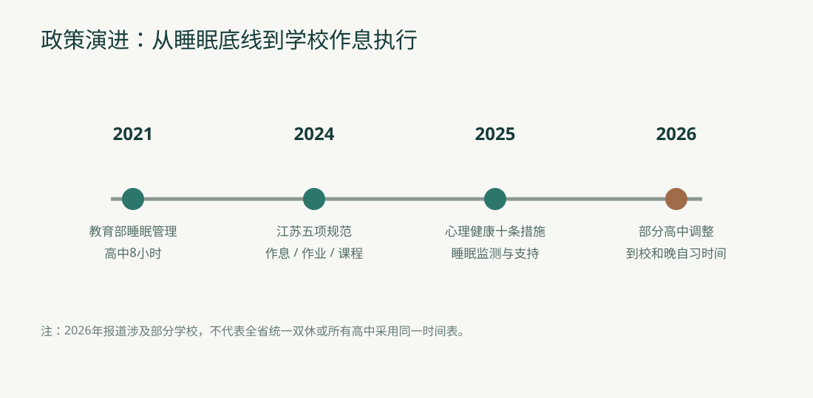

01｜执行摘要：把政策、睡眠和死亡统计分开
江苏2026年11月部分高中推迟到校、缩短晚自习，引发关于超长在校、睡眠不足和教育竞争的讨论。研究必须把政策事实、睡眠科学、心理健康和死亡统计分开。
- 部分高中确实调整，但不是全省统一双休。[S1][S2]
- 教育部2021年明确高中每天睡眠应达到8小时，江苏2024年明确“五项规范”。[S3][S4]
- 延迟开课有增加睡眠的证据，但学业成绩提升并不确定。[S8][S10]
- 江苏5—24岁自杀标化死亡率从2012年1.18/10万升至2021年2.36/10万，但不是高中生样本。[S6]
- 全国数据总体自杀率下降，5—14岁上升，15—24岁全期变化不显著但2017—2021阶段上升。[S7]

02｜2026年江苏发生了什么？
2026年10月27日，江苏省教育厅负责人在《政风热线》回应家长关于高中生在校时间过长的反映。报道记录，家长反映部分学生早上6:40左右到校、晚上22:00左右放学，部分学校在校时间达到15—16小时；教育部门表示将继续检查整治过早到校、过长在校和过多作业等问题。[S1]
11月初，南京多所高中调整到校和晚自习时间，部分学校改为7:20—7:30到校，晚自习在21:00—21:30结束；江阴公布高中7:20到校的调整安排。[S1][S2]
- 报道涉及部分学校和地区，不代表江苏所有高中已统一调整。
- 推迟到校与双休是不同政策维度，不能混为一谈。
- 学校通知的到校时间不等于学生实际入睡时间。
- 在校15小时的描述来自家长反映和走访报道，不是全省抽样调查平均值。

03｜政策基础：睡眠不是可以任意挤占的剩余时间
教育部2021年通知明确：小学生每天睡眠应达到10小时、初中生9小时、高中生8小时；小学上午上课一般不早于8:20，中学一般不早于8:00；学校不得要求学生提前到校参加统一教育教学活动；高中生一般应在23:00前就寝。[S3]
江苏省教育厅2024年部署规范作息时间、作业管理、课程教学、考试管理和课后服务“五项规范”，重点解决到校早、作业多、考试难、资源少和负担重等问题。[S4]
教育部2025年学生心理健康十条措施再次强调合理安排上下学时间、不得要求提前到校参加统一教学活动、有条件学校保障午休，并将睡眠状况纳入体质健康和教育质量监测。[S5]
04｜睡眠研究支持什么？不支持什么？
延迟开课通常能增加睡眠时间
2024年《Sleep Medicine Reviews》系统综述纳入37项研究，发现较晚开课与工作日睡眠时间延长、社会时差减少有关；实际效果受延迟幅度和当地太阳时影响。[S8]
2022年《Pediatrics》荟萃分析汇总28项研究、约177万参与者，发现较晚开课与更长睡眠、较好的总体发展结果和较少负面情绪相关；但部分健康和行为结果研究数量有限。[S9]
学业成绩是否会提高，证据并不确定
2022年关于开课时间和学业成绩的系统综述纳入21项研究，其中9项没有发现成绩关联，其余研究结果混合。现有证据不足以得出较晚开课会普遍提高考试成绩的结论；但也没有证据表明合理延迟开课必然损害成绩。[S10]
作息改革为何可能被反向抵消？
如果学校把到校时间推迟30分钟，但作业增加30分钟，或者家长和培训机构把学习转移到晚上，学生实际睡眠时间可能没有变化。实际睡眠取决于上课、作业、培训、通勤、家庭事务和其他活动的完整时间预算。
05｜江苏自杀死亡率：1.18到2.36究竟意味着什么？
江苏省疾控中心等作者在《中华流行病学杂志》2024年发表研究，使用2012—2021年江苏省5—24岁人群伤害死亡监测数据。研究显示，自杀标化死亡率从2012年1.18/10万升至2021年2.36/10万，AAPC约9.0%，P=0.001。[S6]
| 指标 | 2012年 | 2021年 | 研究结论 |
|---|---|---|---|
| 自杀标化死亡率 | 1.18/10万 | 2.36/10万 | AAPC约+9.0%，P=0.001 |
| 交通事故标化死亡率 | 5.18/10万 | 2.24/10万 | AAPC约-9.4%，P<0.001 |
| 总体伤害标化死亡率 | 10.60/10万 | 8.16/10万 | 总体趋势未达统计显著 |
但研究年龄范围是5—24岁，包括儿童、初高中年龄段、大学年龄段和已经工作的20—24岁人群；它不是在校学生样本。研究测量的是自杀死亡，不是自杀意念、抑郁症患病率或非致死性自伤率。[S6]
06｜全国数据交叉验证：年龄分组会改变结论
中国疾控中心对2010—2021年全国数据的研究显示，总体年龄标化自杀死亡率从10.88/10万下降到5.25/10万；5—14岁组显著上升，15—24岁组全期平均变化不显著，但2017—2021年阶段出现上升。[S7]
江苏与全国研究并非简单矛盾：地区范围、年龄分组、时间窗口和人口标准化方法不同。不能把5—24岁数据直接写成“高中生自杀率翻倍”。
07｜因果分析：作息、学业压力和自杀之间隔着多层机制
学校作息、作业和考试制度可能影响睡眠、压力和日常时间分配；但家庭经济条件、亲子关系、同伴关系、校园欺凌、心理疾病、网络使用、社会支持和求助可及性也会影响心理健康。睡眠不足可能是风险因素之一，但不是自杀行为的唯一原因。
自杀死亡率还受医疗救治、危险物质可及性、社会支持、报告和死因分类等因素影响。不能仅凭某一时期死亡率上升，就断定“学生跳楼导致江苏双休改革”或“高考压力是唯一根因”。同样，不能因为家长反馈孩子精神变好，就立即得出全省抑郁率或自杀率下降的因果结论。
08｜如何科学评估江苏作息改革？
- 建立基线：收集实际到校和离校时间、工作日和周末睡眠、晚自习、作业和校外培训时长、迟到缺勤、心理量表和教师工时。
- 设计对照组：比较先调整和后调整的学校，控制地区、学校层次、年级、家庭背景和考试周期；检验政策前趋势。
- 设置结果指标：直接结果看实际睡眠；中间结果看困倦、情绪和注意力；教育结果看成绩、作业和缺勤；组织结果看教师工时和家长通勤；长期结果看心理健康与求助可及性。
自杀死亡是低频、滞后且受多种因素影响的结果，不适合当作一学期作息改革的主要绩效指标。更适合使用睡眠、心理量表、求助和学校支持体系等连续指标。
09｜政策建议：不能只改时间表
- 刚性落实睡眠底线，监督实际睡眠而不是只检查校门开放时间。
- 同步约束作业和晚自习，防止校内减少的时间被校外培训重新占用。
- 改善考试评价，降低频繁考试、过度排名和单一分数评价。
- 建设校内心理支持、转介机制、保密求助渠道和危机干预流程。
- 保护教师工作时间，防止学生减负转化为教师加班。
- 关注寄宿生、走读生、通勤距离长和家庭照护资源不足的学生。
- 公开政策效果，定期发布睡眠、作业、心理和课堂数据。
10｜结论
江苏2026年部分高中推迟到校和缩短晚自习，是对长期作息与学习负担问题的政策回应。它与教育部2021年睡眠管理要求、江苏2024年“五项规范”和2025年学生心理健康措施具有连续性。
现有研究支持较晚开课通常能增加青少年睡眠，但学业成绩效果并不确定；江苏5—24岁自杀标化死亡率上升值得关注，却不能直接解释为高中生自杀率上升，更不能据此证明学校作息是唯一原因。改革是否成功，应当由长期、可复核的结果数据判断。
参考来源
- 人民网江苏频道，《江苏多所高中推迟上学时间》，2026-11-04。报道
- 澎湃新闻，《江苏江阴公布上课时间调整方案：小学8点到校，高中7点20分》，2026-11-05。报道
- 教育部，《关于进一步加强中小学生睡眠管理工作的通知》，2021-03-30。政策原文
- 江苏省教育厅，《全省“双减”工作推进会在宁召开》，2024-04-18。原文
- 教育部，《进一步加强中小学生心理健康工作十条措施》，2025-10-20。政策原文
- 韦晓淋等，《江苏省2012—2021年儿童青少年伤害死亡流行特征及趋势分析》，《中华流行病学杂志》，2024。论文
- China CDC Weekly, Suicide Mortality by Place, Gender, and Age Group — China, 2010–2021, 2023. 研究
- Rodríguez Ferrante et al., Effects of school start time and its interaction with the solar clock on adolescents’ chronotype and sleep, Sleep Medicine Reviews, 2024. 论文
- Yip et al., School Start Times, Sleep, and Youth Outcomes: A Meta-analysis, Pediatrics, 2022. 论文
- Biller et al., School start times and academic achievement — A systematic review on grades and test scores, Sleep Medicine Reviews, 2022. 论文